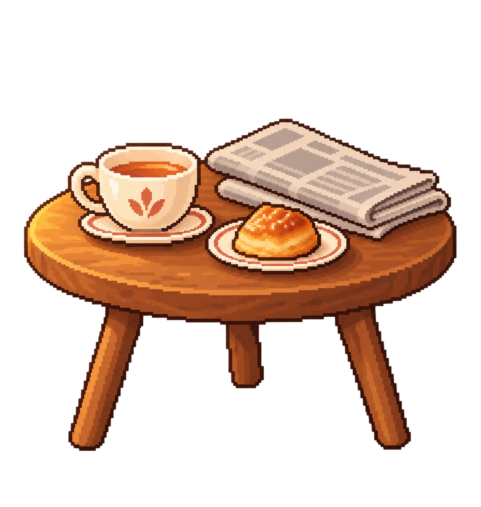

La ballena de Quinta Normal
Algunas criaturas recorren océanos enteros.
P. D. Quizás un viaje muy grande también puede comenzar cerquita de casa.

Todavía quedan muchos lugares por conocer.
Algunas criaturas recorren océanos enteros.
P. D. Quizás un viaje muy grande también puede comenzar cerquita de casa.
La primera foto que Kuro tomó durante su viaje.
P. D. No hace falta ir muy lejos para empezar a mirar el mundo con otros ojos.
¡Nuevo recuerdo para el Álbum de Viaje!
← → moverse · Shift correr · Espacio saltar